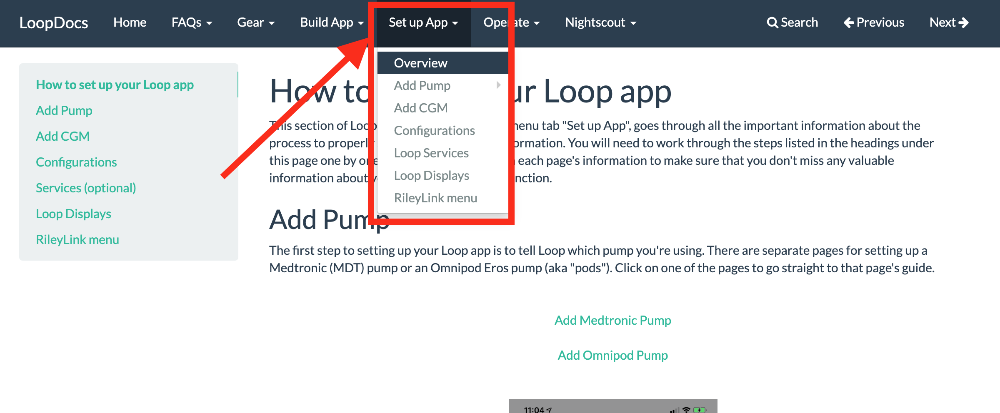

Benutzung dieser Seite - FAQs¶
Diese Webseite bietet dir eine Schritt-Für-Schritt Anleitung, um deine eigene Loop-App zu bauen. Es ist nur verständlich, dass du eingeschüchtert und verwirrt bist, weil das alles ja viel zu technisch ist, aber bedenke, dass das ganze erst einmal nur lesen, ein paar Zeilen kopieren und ein paar Buttons klicken ist. Diese Anleitung wird dir exakt sagen, was du tun musst und dir dabei helfen, das alles einfach zu halten.
Wo fange ich an? Ich weiss nicht was Loop ist.¶
Der einfachste Weg um Loop kennen zu lernen geht über die FAQ-Seiten. Die schnelle Antwort ist, dass Loop eine iPhone App ist, die dir dabei hilft, deine Insulinverabreichungen anhand von CGM-Werten und Benutzereingaben so zu automatisieren, dass deine Blutzuckerwerte im grünen Bereich bleiben. Du brauchst eine bestimmte Ausrüstung (Insulinpumpe, CGM, iPhone oder iPod touch und einen RileyLink) und einen Computer (IOS oder Windows mit einer IOS VM (siehe Complete guide to running macOS Big Sur with Xcode on Windows with VMware), um die App zusammen zu bauen.
Klicke auf das untere Icon, um eine Video zur Einführung in Loop zu sehen und lese dann den Rest dieser FAQ-Seiten.
Das sieht alles so schwer aus. Ich weiss nicht, ob ich das schaffe!¶
Das ist zwar keine Frage, ich habe aber trotzdem eine Antwort für dich. Die Loop App zu bauen ist eigentlich recht einfach. Es sind nur deshalb sehr viele einzelne Schritte, da alles so unterteilt wurde, dass du auch mal zwischendurch eine Pause machen kannst, um zu verschnaufen.
- Die Einteilung wurde so vorgenommen, dass jeder Schritt einen natürlichen Stop oder Verschnaufpunkt darstellt, falls du eine Pause einlegen willst oder du eventuell unterbrochen wirst.
- Manche Schritte sind in fünf Minuten erledigt, lasse dich also nicht von der Anzahl der Schritte verwirren.
- Die einzelnen Schritte sind der Reihenfolge gezeigt, wie du sie erledigen sollst. Also starte bei 1 und arbeite dich voran.
- Jeder Schritt endet mit einem Link zum nächsten Schritt, um dich dahin zu führen, wo du weitermachen sollst. Also schwimme einfach weiter zum nächsten Schritt oder gönne dir eine kurze Pause.
Eins nach dem anderen...
Betrachte nicht den Build-Vorgang als ganzes, das wäre zu überwältigend. Betrachte dir stattdessen lieber einzelne Aufgaben an und erledige sie eins nach dem anderen. Beginne mit Schritt 1, lese langsam und folge den Anweisungen und Screenshots. Überspringe keinesfalls Schritte oder Abschnitte.
Was ist, wenn ich nicht mehr weiter komme?¶
Falls du stecken bleibst, gibt es mehrere Dinge die du tun kannst:
- Scroll noch einmal nach oben zu den vorherigen Abschnitten und überprüfe, ob du versehentlich irgend etwas übersehen hast. Vielleicht war es nur ein überlesener Absatz.
- Überprüfe und vergleiche deine Bildschirmanzeige mit dem was die Screenshots anzeigen. Sieht es bei dir gleich aus? Oder zeigt dein Bildschirm eine Fehlermeldung? Wenn du eine Fehlermeldung hast, lese sie und finde heraus, ob sie dir Hinweise auf das Problem gibt.
- Falls du ratlos bist und gar nicht mehr weiter kommst, beschreibe das Problem im Facebook-Chat (Looped Group (Facebook)) oder in Zulipchat und frage nach Hilfe. Es gibt dort sehr viele Leute, die dir und anderen gerne weiterhelfen. Ein Screenshot und eine Beschreibung deines Problems helfen, damit die Leute dort dir helfen können.
Also, die App ist zusammengebaut und bin ich dann fertig?¶
Nope...wir lassen dich nicht so einfach hängen. Es gibt auch noch eine wichtige Schritt-Für-Schritt-Anleitung, wie du die App beim ersten mal konfigurieren kannst. Neue Anzeigen und Einstellungen werden im "Set up App"-Teil dieser Webseite erklärt. Arbeite dich durch und folge dem Pfad Schritt-Für-Schritt, genauso wie beim Bauen der App. Auf diese Weise erfährst du auf deinem Weg auch noch wertvolle Tipps. Du solltest mit den "Operate"-Seiten dieser Dokumentation gleich verfahren. Diese sind für das Verständnis der Benutzung der App bezüglich Eingabe von Essen, Anpassen von Einträgen und Bolusen usw.
